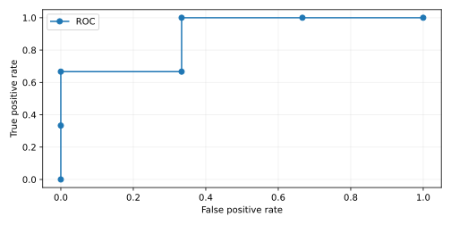
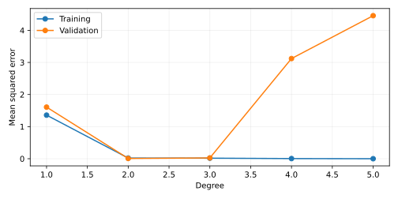
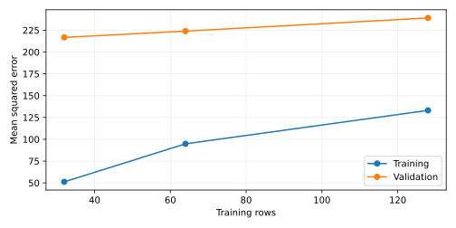

Use this sheet after the seven evaluation lessons. Keep paper, a pencil and a Python interpreter ready. Spend about twenty minutes on the pictures, twenty on numerical reasoning, thirty on coding and twenty on discussion and review. Try each question before reading its worked explanation.
The examples use invented small counts or reproducible course-data experiments. State the positive class, threshold rule, evaluated population and denominator whenever they matter. A correct number without that context can still describe the wrong question.
Mark yourself for the reasoning as well as the final value. If a denominator is absent, explain why a result is undefined before naming a reporting convention. If a split leaks information, identify what crossed the fitting or selection boundary.
| Predicted 0 | Predicted 1 | |
|---|---|---|
| Actual 0 | 6 | 2 |
| Actual 1 | 1 | 3 |
Write the answer and the denominator, path or comparison that supports it.

Write the answer and the denominator, path or comparison that supports it.
| Accuracy | |
|---|---|
| 1 | 1 |
| 2 | 0.5 |
| 3 | 1 |
| 4 | 1 |
| 5 | 0.5 |
Write the answer and the denominator, path or comparison that supports it.

Write the answer and the denominator, path or comparison that supports it.
| TN | FP | FN | TP | |
|---|---|---|---|---|
| Threshold 0.5 | 2 | 1 | 1 | 2 |
| Threshold 0.8 | 3 | 0 | 1 | 2 |
Write the answer and the denominator, path or comparison that supports it.

Write the answer and the denominator, path or comparison that supports it.
For TN six, FP two, FN one and TP three, calculate accuracy, precision, recall and F1. Draw the predicted-positive column and actual-positive row before writing fractions. Explain why precision and recall differ even though they share a numerator.
Use positives 0.45, 0.8 and 0.9 with negatives 0.1, 0.3 and 0.6. Make a three-by-three pair-credit table and compute AUC. Then give one positive and one negative equal scores and explain the half-credit rule without choosing a favourable tie order.
For scores one, one-half, one, one and one-half, compute the mean, every deviation, the average squared deviation and its square root. State the divisor used. Explain why overlapping training folds make the resulting spread different from an automatic confidence interval.
The worked numerical answers include intermediate values. Compare the first step where your calculation differs rather than replacing your answer with a memorised final decimal.
tp, fp = 3, 2
print(f"{tp / (tp + fp):.3f}")Explain the denominator, aggregation or fitting budget used by this fragment.
tp, fp, fn = 3, 2, 1
print(f"{2 * tp / (2 * tp + fp + fn):.3f}")Explain the denominator, aggregation or fitting budget used by this fragment.
scores = [1, 0.5, 1, 1, 0.5]
print(f"{sum(scores) / len(scores):.3f}")Explain the denominator, aggregation or fitting budget used by this fragment.
left, right = (0, 0), (1, 1)
print(f"{(right[0]-left[0]) * (right[1]+left[1]) / 2:.3f}")Explain the denominator, aggregation or fitting budget used by this fragment.
candidates, folds = 8, 5
print(candidates * folds + 1)Explain the denominator, aggregation or fitting budget used by this fragment.
Implement the threshold-matrix exercise using actual-label rows and predicted-label columns. Validate complete input before reporting the final result. Include equality at the threshold, all-negative predictions, a zero ratio denominator and a malformed score. The chosen zero convention must remain visible in your explanation.
Implement pair-counting AUC with one credit for a correctly ranked pair and one-half for a tie. Test a perfect ranking, a reversed ranking, an all-tied pair and an absent actual class. Compare the result with a grouped-threshold ROC implementation as an independent route to the same area.
Keep scores at their original precision for decisions and comparisons. Round only the displayed result. A score rounded across a threshold or into a tie changes the problem you are evaluating.
Discuss the invented study-predictor scenario from the written exercise. Which errors matter to students with limited internet access? What evidence is missing, and what can be shared without exposing individual records? A high overall score cannot fill a small group's evidence gap.
A team leaves final-test rows out of fit but repeatedly changes its grid after checking their scores. Identify the information route. Then compare this with fitting an imputer before cross-validation. Explain why fixing one route does not automatically repair the other.
Explain why high AUC does not choose a threshold, low training loss does not establish generalisation and a learning curve does not reveal exact population bias. Name the additional measurements or evaluation design needed for each claim.
| If the mistake concerns | Revisit | Check your explanation |
|---|---|---|
| Cell names or swapped axes | Confusion matrix | Actual row, predicted column and positive label |
| Metric denominators or imbalance | Precision, recall and F1 | Counts, support and zero-denominator policy |
| Score ties or area | ROC and AUC | Complete tie groups and pair credit |
| Fold leakage or score spread | Cross-validation | Fresh fit, training-only transforms and aggregation |
| Misfit or unstable curves | Bias and variance | Observed finite experiment versus population claims |
| Choosing from final-test answers | Hyperparameter tuning | Development selection and independent final evidence |
Use the marks attached to the worked questions as a guide. Give credit for a correctly stated method even after a small arithmetic slip, but do not accept a correct-looking number produced from the wrong denominator. For discussion, require a clear claim, its evidence and its practical limit.
Finish by explaining one evaluation report aloud without reading a formula list. Name what was predicted, which data stayed unseen, how a decision was made and what the result can support.